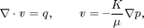

Contents
- Multiscale Pressure Solver Speed up:
- Define the model and set data
- Set up solution structures
- Partition the grid
- Assemble linear systems
- Precompute and preassemble to speed up multiscale
- Plot basis function matrix
- Solve the global flow problems and check time consumption
- Report time consumption for multiscale pressure solver
Multiscale Pressure Solver Speed up:
The implementation of the multiscale method in MRST is meant to be flexible and is therefore not optimized when it comes to speed. Here we demonstrate how we can speed up the multiscale pressure solver considerably by preassembling the basis matrix and precompute values used in the multiscale pressure solver. This is particularly useful for 2-phase problems where we repeatedly solve the pressure and the transport equation because the preassembly only needs to be done once.
In this demo we solve the single-phase pressure equation (i.e. only one pressure step)

for a Cartesian grid with isotropic, homogeneous permeability.
This example is built upon the flow-solver tutorial simpleWellExampleMS.html. It is recommended that you look at this tutorial first.
require coarsegrid
Define the model and set data
We construct the Cartesian grid, set the permeability to 100 mD, and use a single-phase fluid with density 1000 kg/m^3 and viscosity 1 cP.
nx = 15; ny = 15; nz = 15; Nx = 3; Ny = 3; Nz = 3; verbose = false; G = cartGrid([nx ny nz]); G = computeGeometry(G); rock.perm = repmat(100*milli*darcy, [G.cells.num, 1]); fluid = initSingleFluid('mu' , 1*centi*poise , ... 'rho', 1000*kilogram/meter^3);
Set two wells, one vertical and one horizontal.
W = verticalWell([], G, rock, nx, ny, 1:nz, ... 'Type', 'rate', 'Val', 1*meter^3/day, ... 'Radius', .1, 'Name', 'I', 'Comp_i', [1, 0]); W = addWell(W, G, rock, 1:nx, 'Type','bhp', ... 'Val', 1*barsa, 'Radius', .1, 'Dir', 'x', ... 'Name', 'P', 'Comp_i', [0, 1]);
Set up solution structures
Here we need three solution structures, one for each simulator to hold the solutions on the grid and in the wells.
xRef = initState(G, W, 0, [0, 1]); xMs = xRef; xMs_speed = xRef;
Partition the grid
We partition the fine grid into coarse blocks.
p = partitionUI(G, [Nx, Ny, Nz]);
p = processPartition(G, p, 'Verbose', verbose);
Generate the coarse-grid structure
CG = generateCoarseGrid(G, p, 'Verbose', verbose);
Assemble linear systems
First we compute the inner product to be used in the fine-scale and coarse-scale linear systems. Then we generate the coarse-scale system.
gravity off S = computeMimeticIP(G, rock, 'Verbose', verbose); mu = fluid.properties(xMs); kr = fluid.relperm(ones([G.cells.num, 1]), xMs); mob = kr ./ mu; CS = generateCoarseSystem(G, rock, S, CG, mob, 'Verbose', verbose);
Precompute and preassemble to speed up multiscale
Preassemble multiscale basis matrix and precompute grid values used in the speeded up version of the multiscale pressure solver.
[CGspeed, CSspeed] = speedUpMS(G, CG, CS, S.type);
Display the difference between GS/CGspeed and CS/CSspeed
display(CG); display(CGspeed); display(CS); display(CSspeed);
CG =
cells: [1x1 struct]
faces: [1x1 struct]
partition: [3375x1 double]
parent: [1x1 struct]
griddim: 3
CGspeed =
cells: [1x1 struct]
faces: [1x1 struct]
partition: [3375x1 double]
parent: [1x1 struct]
griddim: 3
nsub: [54x1 double]
sub: [1350x1 double]
CS =
basis: {108x1 cell}
basisP: {108x1 cell}
C: [162x27 double]
D: [162x108 double]
basisWeighting: 'perm'
activeFaces: [54x1 double]
activeCellFaces: [108x1 double]
type: 'hybrid'
sizeB: [162 162]
sizeC: [162 27]
sizeD: [162 108]
CSspeed =
basis: {108x1 cell}
basisP: {108x1 cell}
C: [162x27 double]
D: [162x108 double]
basisWeighting: 'perm'
activeFaces: [54x1 double]
activeCellFaces: [108x1 double]
type: 'hybrid'
sizeB: [162 162]
sizeC: [162 27]
sizeD: [162 108]
Bv: [20250x108 double]
Phi: [3375x108 double]
Plot basis function matrix
Pick a 2D slice of the grid and display velocity basis matrix for the cells in the 2D slice
% 2D slice: fineCells = (nx*nx*floor(nz/2)+1):(nx*nx*floor(nz/2+1)); % Find cellfaces of fineCells, each cell has 6 cellfaces cellFaces = mcolon((fineCells-1)*6 +1 , fineCells*6); clf subplot(2,2,1) plotCellData(G, mod(p,5), (1:G.cells.num)'); axis equal tight; view(3) title('Coarse grid partition') subplot(2,2,3) outlineCoarseGrid(G, p, 'FaceColor', 'none', 'EdgeAlpha', 0.2); axis equal tight; view(3); plotCellData(G, mod(p(fineCells),5), fineCells); title('2D slice with coarse grid indicated') subplot(2,2,[2 4]) spy(CSspeed.Bv(cellFaces,:)); title('Velocity basis matrix for cells in 2D slice'); ylabel('Fine cellface') xlabel('Coarse cellface') set(gca, 'XTick', []);
Then, we assemble the well systems for the fine and the coarse scale.
W = generateCoarseWellSystem(G, S, CG, CS, mob, rock, W);
Solve the global flow problems and check time consumption
tic xRef = solveIncompFlow (xRef, G, S, fluid, 'wells', W, 'Solver', S.type); t_fine = toc; tic xMs = solveIncompFlowMS(xMs , G, CG, p, S, CS, fluid, 'wells', W, ... 'Solver', S.type); t_ms_org = toc; tic xMs_speed = solveIncompFlowMSSpeedUp(xMs_speed , G, CGspeed, p, S, ... CSspeed, fluid, 'wells', W, ... 'Solver', S.type); t_ms_speed = toc;
Report time consumption for multiscale pressure solver
disp('* Time consumption of multiscale solvers compared to fine scale: *') disp(['Multiscale original: ', num2str(t_ms_org/t_fine), ' %']); disp(['Multiscale speedUp: ', num2str(t_ms_speed/t_fine), ' %' ]);
* Time consumption of multiscale solvers compared to fine scale: * Multiscale original: 0.44628 % Multiscale speedUp: 0.12821 %